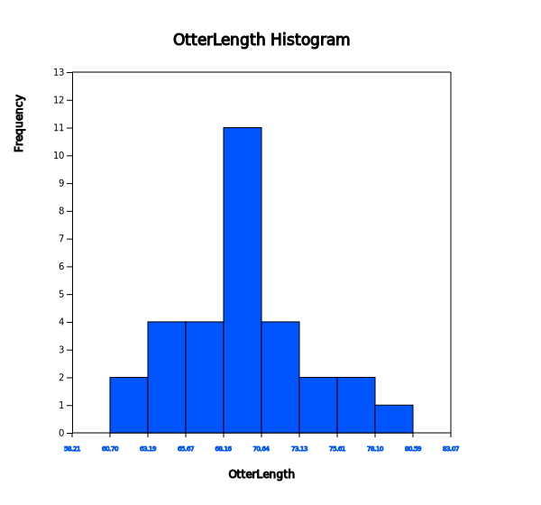
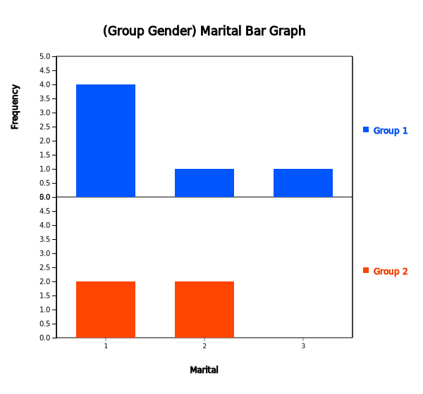
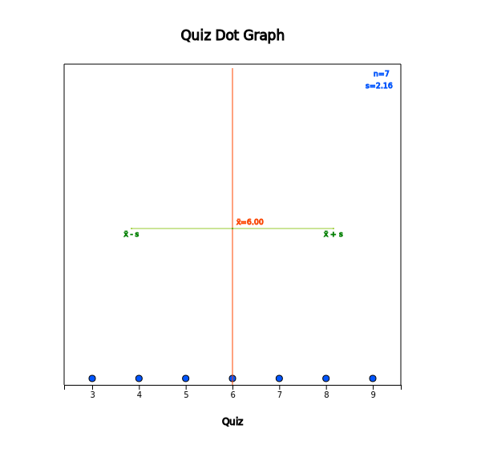

Chapter 2 and 3 discussed how to visualize both the qualitative data and the quantitative data using graphs. Visualizing data using graphs makes easy and fast to see any information that is nested in data. However, if you want more detailed information, it is better to summarize data by using tables or measures.
In section 4.1, we introduce a frequency table as a summary of single variable.
In section 4.2, we introduce a contingency table as a summary of two variables.
In section 4.3, we introduce measures to summarize the quantitative data and a box plot.
A frequency table of qualitative data summarizes frequencies of each possible value of a categorical variable. A frequency table is the most commonly used tool to summarize qualitative data. The frequency table also shows relative frequencies (percents) which are calculated by dividing the frequency of each category with the number of observations belong to the category, and cumulative relative frequencies accumulated in the order of the categories. The bar graph, the pie chart and the band graph in Chapter 2 are drawn by using this frequency table of qualitative data.
The frequency table is usually used to summarize qualitative data, but it can also be used to summarize quantitative data by transforming it to qualitative data. All possible values of the quantitative data are divided into several intervals which are not overlapped with each other and the number of observations belong to each interval is counted to make a frequency table.
Frequency Table
Frequency table of qualitative data summarizes frequencies of each possible value of a categorical variable.
The frequency table can also be used to summarize quantitative data by transforming it to qualitative data. All possible values of the quantitative data are divided into several intervals which are not overlapped with each other and the number of observations belong to each interval is counted to make a frequency table.
A frequency table of sample data can be used to test the goodness of fit of data whether data follow a particular distribution as described in Chapter 11.
4.1.1 Frequency Table for Categorical Variable
Example 4.1.1(Gender Raw Data)
In Example 2.3.1, a bar graph of the gender variable in a class was drawn by using the raw data
shown in Table 4.1.1. The bar graph was able to be drawn by using the frequencies of male and female students. Use 『eStat』 to create a frequency table for this raw data of the gender variable.
Table 4.1.1 Gender raw data
Gender
1
2
1
2
1
1
1
2
1
2
[Ex] ⇨ eBook ⇨ EX040101_Categorical_Gender.csv.
Answer
Enter the gender data of Table 4.1.1 to 『eStat』 as in <Figure 4.1.1>. Use [Edit Var] button to enter the variable name ‘Gender’ and its value labels as 1 for ‘Male’ and 2 for ‘Female’ as in <Figure 4.1.2>.
The data that were edited for their value labels must be saved in JSON format to ensure that the entered information is not lost. When you load a file in JSON format, you must also use the JSON Open icon which is for opening a file in JSON format.
<Figure 4.1.1> Input gender data of a class
<Figure 4.1.2> Input variable name and value label
If you select the gender variable as the 'Analysis Var' in the variable selection box as shown in <Figure 4.1.1>, a bar graph of the gender is drawn as in <Figure 4.1.3>. Then, if you click the Frequency Table icon, the frequency table of the gender variable will appear in the Log Area, as in <Figure 4.1.4>. This frequency table is used to draw the bar graph or the pie chart.
<Figure 4.1.3> Bar graph of the gender
<Figure 4.1.4> Frequency table of the gender
Practice 4.1.1(Vegetable Preference)
Data that examined gender (1: male, 2: female) and vegetable preference(1: lettuce, 2: spinach, 3: pumpkin, 4: eggplant) of an elementary school class can be found at the following location of 『eStat』.
By using 『eStat』 , find a frequency table of the vegetable preference.
4.1.2 Frequency Table for Quantitative Variable
The quantitative data can have too many possible values and a frequency table of the quantitative data may not be easy to analyze.
In order to make a frequency table for quantitative data which can be analyzed easily, possible values of the data are divided into several intervals and frequencies of each interval are investigated. Generally, the intervals are not overlapped with each other and the number of data in each interval is counted. For this purpose, the maximum and the minimum of data are first investigated to calculate the range of the data and then determine the number of intervals. The number of intervals is typically between 5 and 10, but it may depend on a researcher’s choice. Some researchers prefer to use the square root of the number of observations. If the number of intervals is determined, the range of data (maximum - maximum) is divided by the number of intervals to calculate the width of the interval. Starting and ending points of each interval are usually described as ‘from greater than or equal (≥) \(a\)'to less than (<) \(b\) ’ which means a one-sided closed interval [\(a\) ,\(b\) ).
Example 4.1.2(Otter length)
Data of 30 otter lengths can be found at the following location of 『eStat』.
Draw a histogram and frequency table of the otter lengths by using 『eStat』.
Answer
Retrieve the data from 『eStat』 as in <Figure 4.1.5>.
<Figure 4.1.5> Data of Otter Length
Click the Histogram Icon and then select the variable name 'OtterLength' to draw a histogram as shown in <Figure 4.1.6>.

<Figure 4.1.6> Histogram of the otter length
Click on the [Frequency Table] button in the options window below the histogram (<Figure 4.1.7>). Then a frequency table of the histogram intervals is shown as in <Figure 4.1.8> in the Log Area.
<Figure 4.1.7> Options of the histogram
<Figure 4.1.8> Frequency table of histogram for otter length
If you want to adjust the histogram intervals from 60kg with an interval length of 5kg, set ‘Interval Start’ to 60 and ‘Interval Width’ to 5 in the graph options. Press [Execute New Interval] button to display the adjusted histogram as shown in <Figure 4.1.9>. Click on [Frequency Table] button to reveal a new frequency table as in <Figure 4.1.10>.
<Figure 4.1.9> Adjusted histogram of otter length
<Figure 4.1.10> Adjusted frequency table of the otter length
Practice 4.1.2(Age of Library Visitors)
The following data is a survey on the age of 30 people who visited a library in the morning. Draw an appropriate histogram and its frequency table using 『eStat』.
A contingency table or cross table is used to summarize two categorical variables and is also used to study an association of two variables. A cross table divides a table into rows and columns to create cells by using possible values of two categorical variables, and then counts the number of observations (frequency) belonging to the corresponding cell. Percentage of each cell for the sum of rows, or percentage of each cell for the sum of columns can be shown in a contingency table for further analysis. Percentage of each cell for the total number of data can also be shown in a cross table.
A contingency table is usually made for two qualitative data. In case of two quantitative data, the quantitative data can be transformed into qualitative data by using intervals, and then a contingency table for these qualitative data can be created.
Contingency Table
Contingency table or cross table divides a table into rows and columns to create cells by using possible values of two categorical variables, and then counts the number of observations (frequency) belonging to the corresponding cells.
In case of two quantitative data, the data can be transformed into qualitative data by using intervals, and then a contingency table for these qualitative data can be created.
4.2.1 Contingency Table for Two Categorical Variables
Let us discuss how to create a contingency table from the raw data of two categorical variables using the following example.
Example 4.2.1(Survey on Gender and Marital Status)
Table 4.2.1 shows survey data on gender (1: Male, 2: Female) and marital status (1: Single, 2: Married, 3: Other) which are used in Example 2.2.3. Create a contingency table of the marital status by gender using 『eStat』
Table 4.2.1 Survey data on gender and marital status
Enter the data of the gender and the marital status in Table 4.2.1 to the sheet of 『eStat』 as in <Figure 4.2.1>. Use [Edit Var] button to enter a variable name 'Gender' and value labels 'Male' for 1 and 'Female' for 2. In the same way, enter a variable name 'Marital' and value labels 'Single' for 1, 'Married' for 2 and 'Other' for 3.
The data that were edited for their value labels should be saved in JSON format file by clicking on the JSON Save icon. If you want to load this file in JSON format, you must also click on the JSON Open icon which is for loading a file in JSON format.
<Figure 4.2.1> Data input on gender and marital status
Click on the variable name ‘Marital’ ('Analysis Var'), and then the variable name ‘Gender’ ('by Group'). Then you will see a bar graph of the marital status by gender as in <Figure 4.2.2> which is a default graph. Click the Frequency Table icon to display a contingency table of the marital status by gender in the Log Area as in <Figure 4.2.3>. In this contingency table, the ‘by Group’ variable becomes the row variable and the ‘Analysis Var’ becomes the column variable. This contingency table was used to draw the bar graph of the marital status by gender as in <Figure 4.2.2>.

<Figure 4.2.2> Bar graph on marital status by gender
<Figure 4.2.3> Contingency table on marital status and gender
Practice 4.2.1(Survey on Gender and Vegetable Preference)
In a class of an elementary school, a survey on gender (1: male, 2: female) and favorite vegetable (1: lettuce, 2: spinach, 3: pumpkin, 4: eggplant) was conducted. The survey data can be found at the following location of 『eStat』.
Create a contingency table of the favorite vegetable by gender.
4.2.2 Contingency Table for Two Quantitative Variables
In order to create a contingency table for two quantitative variables, we need to divide all possible values of each quantitative variable into some number of intervals as we did when creating a frequency table of single quantitative variable.
If both variables are quantitative, it is advisable to use a statistical software such as R, SPSS, and SAS etc. If one variable is categorical and the other one is quantitative, then a contingency table can be made by using 『eStat』. Let's take a look at the following example.
Example 4.2.2(Teacher’s Age by Gender)
In a middle school, the age and gender of all teachers are surveyed. The data are saved at the following location of 『eStat』.
By using the histogram module of 『eStat』 , create a contingency table of the age by gender.
Answer
Retrieve the data from 『eStat』 as in <Figure 4.2.4> and enter value labels of 'Gender' as 'Male' for 1 and 'Female' for 2.
<Figure 4.2.4> Data input on gender and age
After clicking the histogram icon, select the ‘Age’ variable as 'Analysis Var', and then the ‘Gender’ variable as 'by Group'. A histogram will appear as shown in <Figure 4.2.5>.
<Figure 4.2.5> Histogram on age by gender
If you click the button of 'Frequency Table' in the options window below the graph (<Figure 4.2.6>), a contingency table will appear in the Log Area as shown in <Figure 4.2.7>.
<Figure 4.2.6> Options of the histogram
<Figure 4.2.7> Contingency table of age by gender
If the intervals of the histogram in <Figure 4.2.5> are to be readjusted, for example, from 20 to 10 years apart, set 'Interval Start' to 20 and ‘Interval Width’ to 10 in the graph options and press [Execute New Interval] button. Then a histogram with the adjusted intervals is appeared as in <Figure 4.2.8>, and a contingency table with the adjusted intervals can be obtained by clicking on [Frequency Table] button as shown in <Figure 4.2.9>.
<Figure 4.2.8> Histogram with adjusted intervals
<Figure 4.2.9> Contingency table with adjusted intervals
Practice 4.2.2(Oral Cleanliness by Brushing Methods)
Oral cleanliness scores according to the brushing method (1:basic method, 2: rotation method) are examined and stored at the following location of 『eStat』.
The quantitative data can be summarized by using measures of central tendancy in section 4.3.1 and measures of dispersion in 4.3.2.
4.3.1 Measures of Central Tendency
Average, median and mode are the most frequently used measures of central tendency to summarize the quantitative data.
A mean or average is the sum of all data values divided by the number of data.
If data \(x_1 ,x_2 ,\cdots, x_N\) are from a population, the mean of this data is referred to as a population mean and is usually denoted as \(\mu\) in Greek letter. The calculation formula can be defined as follows.
$$
\small \mu = \frac{1}{N} \sum_{i=1}^N x_i
$$
If data \(x_1 ,x_2 ,\cdots,x_n\) are sampled from a population, the mean of this data is referred as a sample mean and denoted as \(\small \overline x\) (read as 'x bar'). then the mean \(\small \overline x\) is defined as follows.
$$
\small \overline x = \frac{1}{n} \sum_{i=1}^n x_i
$$
Note that both the population mean and sample mean have the same formula except notation.
Also, note that the mean is heavily influenced by an extreme point where one data value is
far, very large or small, from data cluster.
The sample mean can be understood as the center of gravity representing sample data.
Therefore, the sum of deviations which subtracts the sample mean from each of the sample data is zero as follows.
$$
\small \sum_{i=1}^n (x_i - \overline x ) = 0
$$
The sample mean has many good characteristics (Chapter 6) and is frequently used to estimate the population mean.
A median is the value placed in the middle when data are listed in ascending order of their values and is denoted as \(M\) if data are from a population or \(m\) if data are sampled from a population.
If the number of sample data, \(n\), is an odd number, the median is the data value located at the \({\left( n+1 \above 1pt 2 \right)}^\text{th}\) when data are arranged in ascending order.
If \(n\) is an even number, then the median is the average of the data values located at the \({\left( n \above 1pt 2 \right)}^\text{th}\) and \({\left( n+2 \above 1pt 2 \right)}^\text{th}\).
$$
\begin{align}
m &= \left( \frac{n+1}{2}\right)^\text{th} \text{ data } & \text{if $n$ is odd}\\
&= \frac{ (\frac{n}{2})^\text{th} + \left(\frac{n+2}{2} \right)^\text{th} \text{ data }}{2} & \text{if $n$ is even}
\end{align}
$$
The median is not sensitive even if there is an extreme point in data, so it is often used as a measure of the central tendency when there is an extreme point.
A mode is the most frequently occurred value among data values.
$$
\small \textit{Mode} = \text{the most frequently occurred value among data values}
$$
In case of the quantitative data, since there might be so many possible values, it is not reasonable to set a mode value as the most frequently occurred data value. In this case, we usually transform the quantitative data into the qualitative data by dividing the data values into several not-overlapped intervals and count frequencies of each interval. The middle value of an interval which has the highest frequency is set to the mode.
Mean, Median and Mode
Mean or average is the sum of all observed data divided by the number of data.
The mean can be understood as the center of gravity representing data.
The population mean is denoted as \(\mu\) and the sample mean is denoted as \(\small \overline x\).
Median is the value placed in the middle when data are listed in ascending order of their values. The population median is usually denoted as \(M\) and the sample median is denoted as \(m\).
Mode is the most frequently occurred value among data values.
Example 4.3.1(Quiz scores)
Quiz scores of seven students in a class of Statistics are sampled randomly as follows.
5, 6, 3, 7, 9, 4, 8
[Ex] ⇨ eBook ⇨ EX040301_Continuous_QuizScore.csv.
Calculate the mean and median of this data and compare the result with 『eStat』 output.
In order to find the sample median, first arrange the data in ascending order of data values as follows:
3, 4, 5, 6, 7, 8, 9
Since the sample size, 7, is an odd number, median is \(\small {\left( 7+1 \over 2 \right)}^{th} ~=~4^{th}\) data in the arranged data as above which is 6.
In order to use 『eStat』 , enter the data in column V1 of the sheet as in <Figure 4.3.1>. Click the Dot Graph icon and click the variable name ‘Quiz’ to see the dot graph of data as in <Figure 4.3.2>. If you check the option ‘Mean/StdDev’, you can see the location of mean and the length of standard deviation.
<Figure 4.3.1> Data input

<Figure 4.3.2> Dot graph with mean and standard deviation.
If you click the Descriptive Statistics icon , then a table of all descriptive statistics will result in the Log Area as shown in <Figure 4.3.3>. It shows not only mean and median, but also other statistics such as the standard deviation, minimum, and maximum etc.
<Figure 4.3.3> Basic statistics of data
You can also use 『eStatU』 to calculate the descriptive statistics and simulate an influence of extreme point. Select [Box Plot – Descriptive Statistics] from the menu of 『eStatU』 and enter data as in <Figure 4.3.4>. 『eStatU』 calculates all statistics while you are entering data.
<Figure 4.3.5> 『eStatU』 with simulation of an extreme point
If you click the [Execute] button, two sets of dot graph and box plot appear as in <Figure 4.3.5>.
The first graph is for the data you entered and the second one is for simulation.
On the second bar graph of <Figure 4.3.5>, you can click a point (circle) using your mouse
and move to other far side location of axis (make an extreme point) to check its influence on mean and median. You can see that the mean is changed a lot by the extreme point, but the median is not changed by the extreme point.
Practice 4.3.1(Otter Length)
The lengths of 30 otters are measured (in cm) and the data are saved at the following location of 『eStat』.
1) Use 『eStat』 to obtain the mean, median, minimum and maximum of this data.
2) Copy this data to 『eStatU』 and draw a dot graph and a box plot. Simulate the influence of an outlier.
Example 4.3.2(Library Visitor)
If a frequency table of visitors’ age in a library is as shown in Table 4.3.1, find the mode of the age based on this frequency table.
Table 4.3.1 Frequency table of visitor's age in a libray
Age Interval
Frequency
[20.00, 30.00)
2 ( 6.7%)
[30.00, 40.00)
7 (23.3%)
[40.00, 50.00)
7 (23.3%)
[50.00, 60.00)
9 (30.0%)
[60.00, 70.00)
3 (10.0%)
[70.00, 80.00)
2 ( 6.7%)
Total
30 (100%)
Answer
The interval [50.00, 60.00) has the highest frequency which is 9 and median is the mid value of the interval [50.00, 60.00) is 55.
There are several variants to compensate the disadvantage of the mean, one of which is a trimmed mean. This is to list the data in order and then average the data except for a constant number of large and small values respectively in order to eliminate the extremes. The trimmed mean is often used to prevent biased judging by referees in sports such as gymnastics and figure skating at the Olympics. You may remove the top few percent data instead of the maximum and the bottom few percent data instead of the minimum.
Another variant is a weighted mean in which each measurement is multiplied by a constant weight to obtain the mean. The grade point average for college students which uses the weights of credit hours is an example of the weighted mean. The price index which uses the weights of the total amount of sales of the goods is another example of the weighted mean.
If \( x_{1} ,x_{2}, \dots , x_{n} \) are the data values and their weights are \( w_{1} , w_{2} ,\dots , w_{n} \), then the weighted mean is defined as the following.
\[
\text{Weighted Mean} ~=~ { {w_{1} x_{1} +w_{2} x_{2} + \cdots + w_{n} x_{n}} \over {w_{1} + w_{2} + \cdots + w_{n}} } ~=~ { {\sum _{i=1} ^{n} w_{i} x_{i}} \over {\sum _{i=1} ^{n} w_{i}} }
\]
Trimmed Mean and Weighted Mean
Trimmed mean is the average of data except for a constant number of large and small values respectively in order to eliminate extremes.
Weighted mean is the average of weighted sum in which each measurement is multiplied by some weight and divided by the sum of all weights.
Example 4.3.3(Olympic Gymnastics Game)
An Olympic Gymnastics Game was judged by eight referees and their result are as follows:
9.0 9.5 9.3 7.2 10.0 9.1 9.4 9.0
Find the mean and median of this data. Also, find the trimmed mean which excludes the minimum and the maximum. Compare both results.
Answer
This data is not a sample but a population of eight. The mean is as follows.
Since the number of data is \( \small N\) = 8 which is an even number, the median is the average of the 4th and the 5th data in the ordered list as follows:
7.2 9.0 9.0 9.1 9.3 9.4 9.5 10.0
Therefore, the median is the average of 9.1 and 9.3 which is 9.2.
The trimmed mean is the average of the remaining numbers, except the minimum of 7.2 and the maximum of 10.0.
In this data, the median or the trimmed mean is more representative of the data than the arithmetic mean.
Example 4.3.4(Weighted Mean)
A student took three courses in History (two credits), Math (four credits), and English (three credits) in last semester, and got A in History, B in math and C in English. Calculate the mean and the weighted mean with the number of credits if A is rated 4 points, B is 3 points, and C is 2 points.
Weighted mean is less than mean, because although the grade of History which has two credits was A, the grade of English which has three credits was relatively poor C.
In a gymnastics competition, four judges scored 3, 4, 6, and 7 points for a player A and 2, 4, 6,
and 8 points for a player B. Both players have the same mean of 5, but it is easy to see that
the player B has a large deviation in the scores compared to the player A. Degree of data dispersion
is calculated using a numerical value to compare two sets of data and it is called a measure of dispersion.
The most commonly used measure of dispersion is a variance (or standard deviation) and other measures
include a mean absolute deviation, a range, and an inter-quartile range.
A variance is an average of all squared distances from each data to the mean. Therefore, if data are
spread widely around their mean, the variance will be large, and if data are concentrated around
the mean, the variance will be small. A population variance is denoted as \(\sigma^2\), and a
sample variance is denoted as \(s^2\). Formulas to calculate the population variance and the sample
variance are slightly different as follows.
$$\small
\begin{align}
&\text{Population variance} &\quad \sigma^{2} ~&=~ { {1 \over N} {\sum _{i=1} ^{N} (x_{i} - \mu )^{2}} } ~~~~ (N:~number~ of~ population~ data) \\
&\text{Sample variance} &\quad s^{2} ~&=~ { { 1 \over {n-1} }{\sum _{i=1} ^{n} (x_{i} - {\overline x } ) ^{2}} } ~~~~ (n:~ number~ of~ sample~ data)
\end{align}
$$
There are important reasons for using \(n-1\) instead of \(n\) when calculating the sample variance
which will be discussed in Chapter 6. Meaning of the population variance, which is an average of all
squared distances from each data to the population mean, is illustrated in <Figure 4.3.6>.
In this Figure, dot mark represents each data value. \(\sigma^2\) = 2.5 is calculated as the sum of
squared distances (10) divided by the number of data, \(n\) = 4 in this example.
<Figure 4.3.6> Calculation of a population variance
A standard deviation is defined as the square root of the variance. A population standard deviation
is denoted as \(\sigma\), and a sample standard deviation is denoted as \(\s\). The variance is not
easy to interpret, because it is an average of the squared distances. However, since the standard
deviation is the square root of the variance, it is interpreted as an average distance from each
data value to the mean.
$$
\begin{align}
\sigma &=~ \sqrt {\sigma^2} \\
s &=~ \sqrt {s^2}
\end{align}
$$
Variance and Standard Deviation
Variance is an average of all squared distances from each data to the mean. A population
variance is denoted as \(\sigma^2\), and a sample variance is denoted as \(s^2\).
Standard deviation is defined as the square root of the variance. A population
standard deviation is denoted as \(\sigma\), and a sample standard deviation is denoted as \(s\).
Example 4.3.5(Quiz scores)
In Example 4.3.1, the mean of the following sample data was calculated as 6.
5, 6, 3, 7, 9, 4 and 8
Calculate a sample variance and a sample standard deviation of this data.
These values coincide with the output of 『eStat』 in <Figure 4.3.3> and the output of 『eStatU』 in <Figure 4.3.4>.
When there are more than two quantitative variables, if units of data measurement are different from each other, comparing their standard deviations is meaningless. In this case, a coefficient of variation which is a division of the standard deviation by the mean, is used to compare several variables. The coefficient of variation is usually calculated as a percent value of the standard deviation to its mean.
$$\small
\begin{align}
&\text{Population coefficient of variation} &C = \frac{\sigma}{\mu} \times 100 \quad \text{(unit %)} \\
&\text{Sample coefficient of variation} &c = \frac {s} {\overline {x}} \times 100 \quad \text {(unit %)}
\end{align}
$$
Coefficient of Variation
Coefficient of variation is a division of the standard deviation by the mean and it
is used to compare several variables. The coefficient of variation is usually calculated
as a percent value of the standard deviation to its mean.
Example 4.3.6(Sales data)
In a company, the average weekly sales was 1.36 billion dollar and its standard deviation was 0.28 billion dollar. If the same data were made in monthly sales, the average was 5.44 billion dollar and its standard deviation was 0.5 billion dollar. Calculate a coefficient of variation for each case and compare.
Answer
The coefficient of variation in weekly sales is as follows.
Therefore, we can see that the variation in monthly sales is smaller than the variation in weekly sales.
A range is the difference between the maximum and the minimum value of data. The range is easy to calculate, but it is not a good measure of dispersion if there are extreme points.
$$
\text{Range = Maximum - Minimum}
$$
A \(p\)-percentile implies roughly the percent data when data are arranged in ascending order from small to large.
$$
p\text{-percentile} = p\%~ \text{of observations} \le \text{to this value and} ~(100-p)\% ~\ge~ \text{this value.}
$$
Note that, if data size is small, a single observation may fall into several percentiles according to this definition.
An inter-quartile range is a measure to complement the disadvantage of the range. The 25 percentile of the data is called the 1st quartile (Q1), the 50 percentile is called the 2nd quartile (Q2) or median, and the 75 percentile is called the 3rd quartile (Q3). The inter-quartile range (IQR) is the range between the 3rd quartile and the 1st quartile.
$$
\text{Inter-quartile range (IQR) = Q3 - Q1 }
$$
One simple way to calculate Q1 and Q3 is that, after we arrange the data in ascending order, we divide the data into two pieces which have equal number of data. In case of odd number of data, we include the median to each piece of data. Q1 is the median of the 1st piece of data and Q3 is the median of the 2nd piece of data.
Range, percentile, Quartile and Inter-quartile Range
Range is the difference between the maximum and the minimum value of data.
\(p\)-percentile is that there are p% of data less than or equal to (\(\le\)) this value and (100-p)% of data located above or equal to (\(\ge\)) this value. The 25 percentile of the data is called the 1st quartile (Q1), the 50 percentile is called the 2nd quartile (Q2) or median, and the 75 percentile is called the 3rd quartile (Q3).
Inter-quartile range (IQR) is the range between the 3rd quartile and the 1st quartile.
Example 4.3.7
If you have data 5, 3, 7, 9, find a range and an inter-quartile range.
Answer
The maximum of the data is 9 and the minimum is 3, therefore range is as follows.
\( \qquad \small
\text{Range} ~=~ 9 – 3 ~=~ 6.
\)
In order to find the quartiles of the data, first arrange the data in ascending order as follows.
3, 5, 7, 9
The median of these numbers is the average of \( ({4 \over 2})^\text{th} \) and \( ({4 \over 2 + 1})^\text{th} \) data.
In order to calculate quartiles, since the number of data is even, we divide data into two pieces as follows:
3, 5
7, 9
The first quartile Q1 is the median of {3, 5} which is Q1 = 4. The third quartile Q3 is the median of {7. 9} which is Q3 = 8. So, the inter-quartile range IQR is as follows.
Example 4.3.8
Using the data of Example 4.3.1 which are as follows, calculate a range and an inter-quartile range and compare it with the output of 『eStat』.
5, 6, 3, 7, 9, 4 and 8
Answer
The maximum of the data is 9 and the minimum is 3. Therefore, the range is as follows.
\( \qquad \small
\text{Range} ~=~ 9 – 3 ~=~ 6.
\)
In order to find quartiles of data, first arrange the data in ascending order as follows.
3, 4, 5, 6, 7, 8, 9
The median of the data is the data value of \( ({{7+1} \over 2})^\text{th} ~=~4^\text{th} \) which is 6.
In order to calculate the quartiles, since the number of data is odd, divide the data into two pieces as follows. Note that the median is included in both pieces of data.
3, 4, 5, 6
6, 7, 8, 9
The first quartile Q1 is the median of {3, 4, 5, 6} which is Q1 = 4.5. The third quartile Q3 is the median of [6, 7. 8, 9] which is Q3 = 7.5.
So, the inter-quartile range IQR is as follows.
These values of Q1, Q3 and IQR coincide with the output of 『eStat』 in <Figure 4.3.3> and the output of 『eStatU』 in <Figure 4.3.4>.
A box plot is a graph to show the minimum, the 1st quartile, the median, the 3rd quartile, and the maximum of the data simultaneously that has been used recently.
The box plot first marks the 1st quartile (Q1) and the 3rd quartile (Q3) at a horizontal line and connects with a square box. Then displays the median (Q2) at the location proportional to Q1 and Q3 in the box and connects the box with the minimum and the maximum.
Also, draw a vertical line at (minimum - 1.5 IQR) and at (maximum + 1.5 IQR) as in <Figure 4.3.3>. Using the box plot, you can check a symmetry of data, a central location of data (median), and a degree of dispersion (IQR).
Data which are less than the line (minimum - 1.5 IQR) or greater than (maximum + 1.5 IQR) are considered as extremes (marked * in <Figure 4.3.7>).
Some statistical packages display the left line which is to check an extreme point as Max(minimum, Q1 - 1.5 IQR) and the right line as Min( maximum, Q3 + 1.5 IQR).
<Figure 4.3.7> box plot
Box Plot
Box plot is a graph to show minimum, Q1, median, Q3, maximum of data simultaneously that has recently begun to be widely used.
Example 4.3.9
Using the following data, draw a dot plot and a box plot using 『eStatU』.
5, 6, 3, 7, 9, 4, 15
Answer
Using the menu [Box Plot – Descriptive Statistics] in 『eStatU』 , if you enter the data and click the [Execute] button, the dot plot and the box plot appear as in <Figure 4.3.8>.
Example 4.3.10(Ages of teachers by gender)
In a middle school, ages of all teachers with their gender were surveyed and the data can be found at the following location of 『eStat』.
1) Draw a box plot of the age using 『eStat』 and examine a median, a range, a quartile and an inter-quartile range.
2) Draw a box plot of the age by gender using 『eStat』 and compare medians, ranges, quartiles and IQRs by gender.
Answer
1) After loading the data to 『eStat』 , enter the value labels of ‘Gender’ as ‘Male’ for 1
and ‘Female’ for 2 using [EditVar] button. Click on the box plot icon and then 'Age' variable,
then the horizontal box plot is appeared as in <Figure 4.3.9>. If you select ‘Vertical’
from the options below the graph, the vertical box plot shown as in <Figure 4.3.10> is appeared.
Based on this box plot, we can see that the upper half of data is more scattered than the lower half
of data which implies there are more aged teachers.
<Figure 4.3.9> Horizontal box plot of age variable
<Figure 4.3.10> Vertical box plot of age variable
If you click button of [Descriptive Statistics] in the options, the basic statistics of the age is displayed as shown in <Figure 4.3.11>.
<Figure 4.3.11> Descriptive statistics of age variable
2) If you click on 'Gender' after 'Age' variable, the horizontal box plot by gender appears as shown in <Figure 4.3.12>. If you select ‘Vertical’ from the options below the graph, the vertical box plot by gender appears as shown in <Figure 4.3.13>. You can observe that dispersion of female teachers' ages is greater than that of male teachers’.
<Figure 4.3.12> Horizontal box plot of age by gender
<Figure 4.3.13> Vertical box plot of age by gender
If you click the button of [Basic Statistics] in the options, the basic statistics of the age by gender is displayed in the Log Area as in <Figure 4.3.14>.
<Figure 4.3.14> Descriptive statistics of age by gender
Practice 4.3.2(Effect of Vitamin C on Tooth Growth in Guinea Pigs)
The effect of Vitamin C on tooth growth in Guinea Pigs was examined. The response is the length of odontoblasts (cells responsible for tooth growth) in 60 guinea pigs. Each animal received one of three dose levels of vitamin C (0.5, 1, and 2 mg/day) by one of two delivery methods, orange juice or ascorbic acid (a form of vitamin C and coded as VC). Data can be found at the following location of 『eStat』.
[Ex] ⇨ eBook ⇨ PR040302_Rdatasets_ToothGrowth.csv
Data format:
V1
length
numeric
Tooth length
V2
supp
factor
Supplement type (VC or OJ).
V3
dose
numeric
Dose in milligrams/day
1) Draw a box plot of the length using 『eStat』 and find the median, the range, the quartiles and the IQR. Analyze the graph and the basic statistics.
2) Draw a box plot of the length by the supplement using 『eStat』 and find the median, the range, the quartiles and the IQR by the supplement. Analyze the graphs and the basic statistics.
3) Draw a box plot of the length by the dose using 『eStat』 and find the median, the range, the quartiles and the IQR by the doset. Analyze the graphs and the basic statistics.